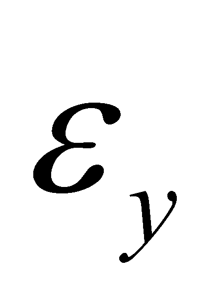
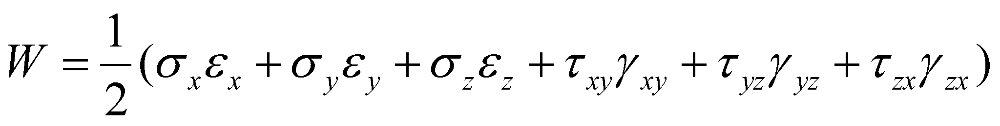

|
|
|
The deformation of the natural media (NM - gases, liquids, solids etc.) under the action of external forces is a very vast subject, which is approached starting with the physics textbooks and continuing with the specialized studies focused on fields such as statics and fluid dynamics, strength of materials and many others.
This annex will show only few of the simple relations which determines the attributes values specific to a deformation (a state change), depending on the attributes of the agent which generates it. If we have a medium portion with a volume V (for example, with a spherical shape), by an application on the body surface of an even pressure p, a ΔV volume decrease is obtained. The ratio is the relative volume variation (variation of the volume unit). If the variations are elementary, the following amount is being defined:
(X.21.1)
named compressibility. The reverse amount of the compressibility is the elasticity modulus E. The dimensions of E are the ones specific to a pressure. If the volume variation takes place as a result of a temperature variation, an isobar dilatation coefficient shall be analogously defined:
(X.21.2)
As for the solids, an amount is defined, being named unitary strain:
(X.21.3)
with the components
(normal unitary
strain) according to the direction of
the normal’s versor
 ,
and
(unitary tangential
strain) into the plane of the element
dA.
Between the amounts E
(longitudinal elasticity modulus),
G (transverse elasticity modulus)
and μ (Poisson’s coefficient or
transverse contraction coefficient)
there is the following relation:
,
and
(unitary tangential
strain) into the plane of the element
dA.
Between the amounts E
(longitudinal elasticity modulus),
G (transverse elasticity modulus)
and μ (Poisson’s coefficient or
transverse contraction coefficient)
there is the following relation:
(X.21.4)
Comment X.21.1: Attention! Do not mistake the symbol G for the transverse elasticity modulus with the notation for the G-type media class. The notion of normal unitary strain for S-type media is identical with the pressure one from the L or G-type media, involving the normal component of the variation of an energetic flux (a force) applied on a surface with an area A. According to the objectual philosophy, once with the introduction of the concept of real bounding surface (RBS) of a MS, in which the tangential flux components occur, the notion of tangential strain regains its original meaning, similar with the concept of normal effort, which is also a pressure, but this time, it occurs on the cross section of a RBS. Otherwise speaking, the tangential strain is not applied into the plane of the element dA, but on the element of the transverse section of RBS. According to the classic approach (through abstract surfaces), it is clear that the tangential strain could not be regarded as a pressure, because the normal area on the tangential strain was null. As regards the term of transverse contraction, another remark needs to be done. First of all, this term has a clear meaning for the stretching strains of the solid or liquid materials, and is caused by the property of these media to preserve their volume; consequently, an increase of a dimension (by means of traction) generates a decrease (contraction) of the cross section dimensions. In case of the compression strains, there is an obvious increase of the cross section sizes, therefore, a transverse dilatation occurs, rather than a contraction. If we shall consider the dilatation as a negative contraction (#), then, the term can still be used.
If there is a mean unitary strain and the mean specific elongation , then, the following relation is applicable:
(X.21.5)
The amounts
,
,
represent specific
elongations (as compared to the axes
X,Y,Z) and
the amounts
,
 and
are angular deformations or specific
slides against that axis as well. In
case of the isotropic bodies, we have:
and
are angular deformations or specific
slides against that axis as well. In
case of the isotropic bodies, we have:
 ,
,
(X.21.6)
,
,
(X.21.6)
and:
, , (X.21.7)
or vice versa, the relations between the unitary strains and the specific deformations:
, , (X.21.8)
and:
, , (X.21.9)
The specific deformation’s potential energy (the energy stored into the space unit) is:
(X.21.10)
and if the relations between the specific distortions are linear, the relation X.21.10 becomes:
 (X.21.11)
The same energy may be written depending only on the unitary strains:
(X.21.12)
or on the specific deformations:
(X.21.13)
All these complicated and probably boring relations were mentioned with a clear purpose, namely, to underline the existence of a deformation of the material media depending on the action of some forces (of some energy fluxes). All these deformations have a common feature - they are proportional with the applied force, and they are a state attribute of the potential energy stored in that medium. Consequently, the objectual philosophy asserts that:
There cannot exist a material medium which is non-deformable.
The above mentioned statement, with a particular case, the non-existence of the incompressible media112, can be demonstrated by the reduction ad absurdum method. If we are assuming that a non-deformable medium would exist, this means that it would have a null compressivity according to the relation X.21.1, or accordingly, the infinite elasticity E modulus. This fact would attract on the one hand an infinite propagation velocity of the compression waves, and on the other hand, the impossibility of existing such waves because their specific local compression feature would not be able to exist. Furthermore, the potential energy cannot be stored and restored in a non-deformable medium, because the external state attribute for this kind of energy is even the medium deformation, as we have mentioned in chapter 7 and in the relations X.21.10…X.21.13.
The deformability of a specific medium
depends on the type of the medium’s elements, on the bonds type
(interactions) between the elements, on the intensity, temporal
distribution and anisotropy of these bonds. The most non-deformable
(more rigid) media known so far (such as the diamond or some carbide
types) however have finite elasticity modules and finite propagation
velocity rates of the pressure waves.
112 The media compressibility is let aside in some papers (being considered as incompressible), but this aspect aims only to simplify the relations deployed in case of some processes, in which the compressibility is not important (such as, for instance, the motion of some bodies with low velocity through the fluid media).
Copyright © 2006-2011 Aurel Rusu. All rights reserved.